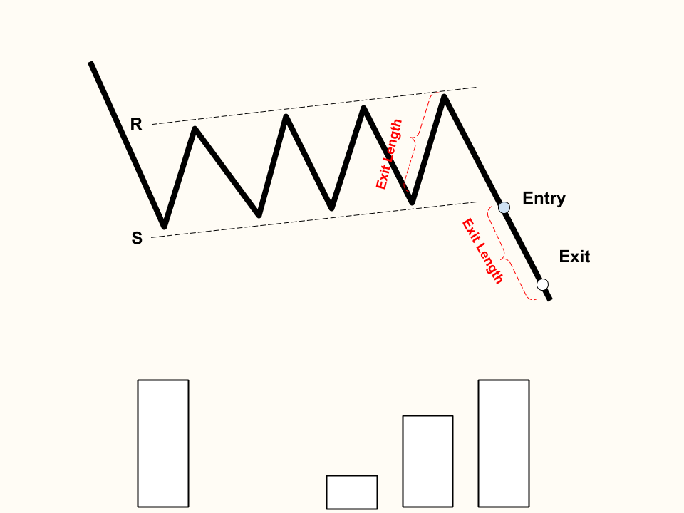
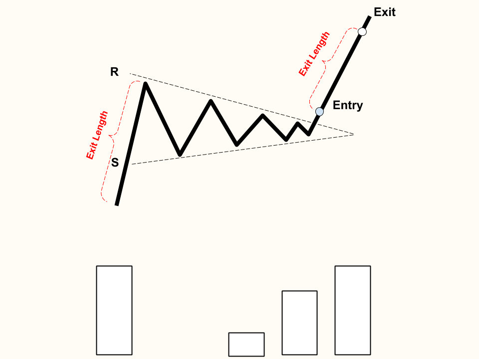

Bullish Flag
The resistance line is formed by an initial spike in price, then multiple price peaks in a slight reversal
The support line is formed with the resistance line, with multiple price troughs in a slight reversal
There can be multiple breakouts: once after breaking the resistance and another shortly follows the continuation of the uptrend
The volume contracts during the pattern formation, and expands upon breakout
Flags patterns are short term, usually lasting less than 21 days.
Breakout Confirmation: A close above the resistance trend line with higher than average volume
Exit: "Exit Length" distance away from the end of the flag

Bearish Flag
The resistance line is formed by an initial spike in price, then multiple price peaks in a slight reversal
The support line is formed with the resistance line, with multiple price troughs in a slight reversal
There can be multiple breakouts: once after breaking the resistance and another shortly follows the continuation of the uptrend
The volume contracts during the pattern formation, and expands upon breakout
Flags patterns are short term, usually lasting less than 21 days.
Breakout Confirmation: A close below the support trend line with higher than average volume
Exit: "Exit Length" distance away from the end of the flag

Pennants
Pennants are very similar to flags in terms of structure. They both have a distinctive initial flag pole.
The difference between pennants and flags are their resistance and supports.
While flags have level trend lines, pennants have converging trend lines.
Pennant patterns are short term, usually lasting less than 21 days. Anything longer is more likely to be a falling wedge.
Bulls' Breakout Confirmation: Trend lines converge and close above resistance with higher than average volume
Bears' Breakout Confirmation: Trend lines converge and close below support with higher than average volume
Exit: "Exit Length" distance away from the end of the flag
Back to Homepage
Forward to Flags and Pennants